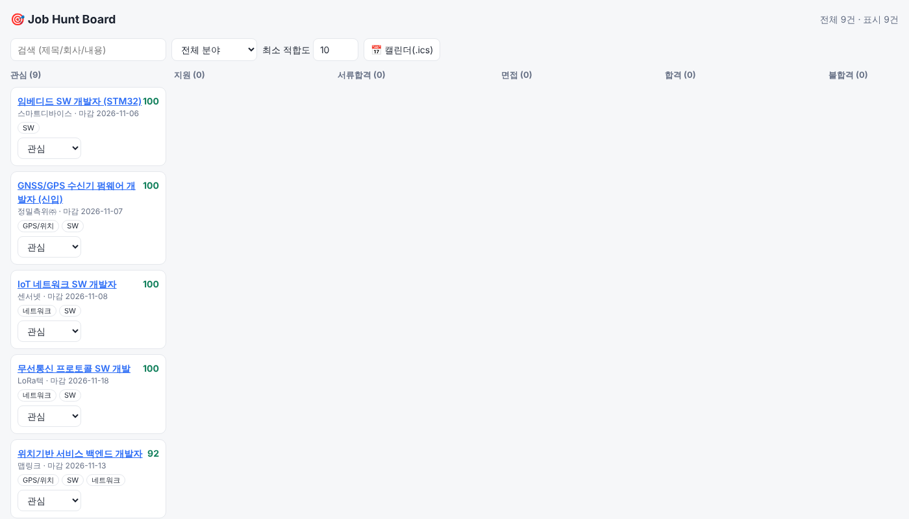

🎯 Job Hunt Command Center
GPS·네트워크·SW 직무 채용 공고를 모아 적합도를 계산하고, 지원 현황을 한곳에서 관리하는 개인 취업 준비 도구입니다.
목적
GPS 송수신 장치 제작 캡스톤 경험을 살려 GPS/GNSS·네트워크·임베디드/SW 직무에 지원하기 위해 만든 비상업적 개인 학습 프로젝트입니다. 일반 이용자에게 제공하는 서비스가 아닙니다.
기능
- 채용 공고 수집: 공식 Open API·RSS만 사용 (사람인 Open API, 공공데이터포털 등)
- 키워드 가중치 기반 적합도(0~100점) 및 분야(GPS·네트워크·SW) 분류
- 지원 상태 칸반 (관심 → 지원 → 서류합격 → 면접 → 합격/불합격)
- 마감·면접 일정 캘린더(.ics) 내보내기, Notion 기록, 텔레그램 마감 알림

데이터 이용 원칙
- API 이용약관과 robots.txt를 준수하며, 하루 호출 횟수를 코드로 제한합니다(기본 20회).
- 수집한 공고는 본인 열람용으로만 사용하고 외부에 재배포하지 않습니다.
- 각 공고는 원문(출처 사이트) 링크로 연결하며, 출처를 표기합니다.
- 대시보드는 비밀번호로 보호되어 제3자에게 공개되지 않습니다.